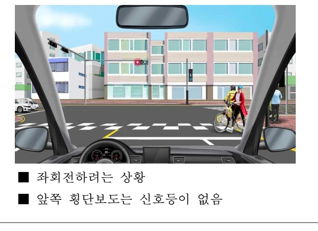

807. You are about to turn left at a T-intersection. Which of the following are the safest ways to drive? (Select TWO)

- ①Quickly turn left at the left-turn signal.
- ②Stop before the crosswalk stop line.
- ③Enter the crosswalk slowly and turn left while paying attention to the vehicle on the left.
- ④Turn left with a safe distance to the side of the person on the right.
- ⑤Wait for pedestrians and bicycle riders using the crosswalk to complete crossing.
Show answer
Answer
② Stop before the crosswalk stop line.
⑤ Wait for pedestrians and bicycle riders using the crosswalk to complete crossing.
Reference
The intersection in the picture has traffic lights installed and in operation, but the crosswalk in front has no traffic lights. The car's signal is illuminated with a left turn green arrow, so the driver can proceed in the direction indicated by the green arrow. However, since there are people crossing or trying to cross at a crosswalk without a traffic light, in this situation, you must wait in front of the stop line and wait until the pedestrian on the crosswalk crosses safely.
Reference text is a machine translation for study.